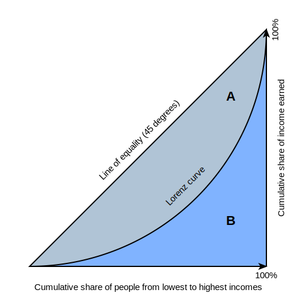

Rising spatial inequality across countries and time
Andrea Musso, Dirk Helbing and Frank Neffke
Wealth Inequality
- Money
- People
Spatial Inequality
- People
- Places
Spatial Inequality affects a range of other inequalities
- Wages
- Opportunity
- Crime Rates
- Disease Contagion
- ...

Consider all the cities in a country
- Rank cities:
- 1 = Largest City
- 2 = 2nd Largest City
- ...
- Plot logarithm of rank vs logarithm of population
Two theories have underpinned our understanding of urbanization
- Zipf's Law
- Proportional Growth


Population growth is proportional to current population
- Preferential attachment (Simon)
- Every round new residents arrive
- They move to a city with probability proportionally to its size
- They build a new city with small probability
- Random walks (Gabaix) \[P_{t+1} = \gamma_t P_{t}, \ \gamma_t \ \text{random variable} \]
- Spatial inequality does not change across time (Proportional Growth)
- Countries should have similar levels of spatial inequality (Zipf's Law)
Data
- USA Cities 1850-1940
- Global Cities 1975-2030
$\gamma_u$ = Urban population growth
$\gamma_c$ = Country population growth
$d > 1$ = Divergence
$d < 1$ = Convergence

$\gamma_{it}$ = Growth of industry $i$ from $t$ to $t+1$
$s_{ct}$ = Share of city $c$'s workers in industry $i$ at time $t$